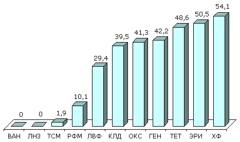

Антибиотикорезистентность :: Состояние антибиотикорезистентности в России
Антибиотикорезистентность в России
Возбудители нозокомиальных инфекций
S.aureus и коагулазонегативные стафилококки (КНС)
В многоцентровом исследовании чувствительности стафилококков в Москве и Санкт-Петербурге (1998 г.) были выявлены различия в распространении резистентности в отдельных стационарах. При этом устойчивость к оксациллину значительно чаще встречалась среди КНС (до 65,9%), чем среди S.aureus (до 40%). В целом в Москве частота выделения MRSA составила 33,4%, в Санкт-Петербурге - 4,1%. Все резистентные к оксациллину стафилококки были чувствительны к ванкомицину, а 95%, 84% и 70% штаммов MRSA были чувствительны к фузидиевой кислоте, рифампицину и ципрофлоксацину, по сравнению с 80%, 85% и 61% КНС, соответственно.
Результаты многоцентрового исследования распространённости резистентности S.aureus в ОРИТ России (исследование СтЭнт), проведённого в 2001 г., показаны на рис. 7.
|

Рисунок 7. Резистентность (%) нозокомиальных штаммов S.aureus
(СтЭнт, 2001 г.)
Сокращения:
ВАН - ванкомицин; ЛНЗ - линезолид; ТСМ - ко-тримоксазол;
РФМ - рифампицин; ЛВФ - левофлоксацин; КЛД - клиндамицин;
ОКС - оксациллин; ГЕН - гентамицин; ТЕТ - тетрациклин;
ЭРИ - эритромицин; ХФ - хлорамфеникол.
|
Enterococcus spp.
В Москве и Санкт-Петербурге в 1995-1996 гг. было выявлено 16% E.faecalis, резистентных к ампициллину, при этом наблюдались значительные различия частоты устойчивости между отдельными лечебными учреждениями. Высокий уровень резистентности к аминогликозидам составил 44% к стрептомицину и 25% к гентамицину. Не было выявлено умереннорезистентных или резистентных к ванкомицину штаммов энтерококков. В отличие от E.faecalis, 75% штаммов E.faecium было устойчиво к ампициллину, чувствительность к другим антибиотикам существенно не отличалась.
С эпидемиологической целью было проведено определение чувствительности штаммов энтерококков, выделенных из кала у детей, находящихся в отделении выхаживания недоношенных новорожденных (табл. 8).
Таблица 8. Резистентность (%) Enterococcus spp. к антимикробным препаратам у недоношенных новорожденных (Смоленск, 1995-1996 гг.)
* Умереннорезистентные штаммы
В целом E.faecium отличались более высокой резистентностью к антибиотикам, за исключением ванкомицина, активность которого в отношении всех энтерококков была сравнимой, и хинупристина/дальфопристина (3% резистентных E.faecium против 15% - E.faecalis). Только 3% E.faecalis были устойчивы к ампициллину, в отличие от 77% E.faecium. Большинство E.faecium демонстрировали высокий уровень резистентности к аминогликозидам (64% к гентамицину и 56% к стрептомицину).
В рамках многоцентрового проспективного исследования распространённости антимикробной резистентности нозокомиальных грамотрицательных возбудителей в 28 ОРИТ 15 городов России (NPRS-3), проведённого в 1997-1999 гг., были изучены 2664 микроорганизма (табл. 9, рис. 8, 9).
Семейство Enterobacteriaceae
Резистентность бактерий семейства Enterobacteriaceae широко варьирует между отдельными стационарами, во многом являясь отражением политики назначения антимикробных препаратов.
Таблица 9. Резистентность (%) нозокомиальных штаммов семейства Enterobacteriaceae (NPRS-3).
| |
E.coli
(N=489) |
K.pneumoniae
(N=389) |
Proteus spp.
(N=263) |
Enterobacter spp.
(N=203) |
| Ампициллин |
49,7 |
- |
71,5 |
80,3 |
| Пиперациллин |
40,9 |
68,4 |
37,6 |
44,8 |
| Пиперациллин/тазобактам |
6,3 |
30,1 |
8,7 |
29,1 |
| Амоксициллин/клавуланат |
35,8 |
56,0 |
32,7 |
89,7 |
| Цефуроксим |
19,2 |
57,3 |
51,3 |
63,1 |
| Цефотаксим |
11,0 |
37,5 |
20,9 |
29,1 |
| Цефтриаксон |
11,5 |
40,4 |
17,5 |
30,5 |
| Цефтазидим |
7,8 |
33,7 |
6,9 |
24,6 |
| Имипенем |
0 |
0 |
0 |
0 |
| Гентамицин |
20,9 |
55,8 |
43,3 |
24,1 |
| Амикацин |
2,2 |
9,0 |
3,4 |
2,5 |
| Ципрофлоксацин |
8,4 |
12,9 |
8,7 |
5,9 |
Штаммы E.coli были наиболее резистентны к ампициллину, пиперациллину, амоксициллину/клавуланату, цефуроксиму. Максимально активным в отношении E.coli были имипенем, к которому сохраняли чувствительность все штаммы E.coli, пиперациллин/тазобактам (резистентность 6,3%), цефалоспорины III поколения: цефтазидим (резистентность 7,8%), цефотаксим и цефтриаксон (резистентность около 11%).
Отмечен высокий уровень резистентности K.pneumoniae ко всем исследованным АМП, за исключением амикацина (резистентность 9%) и имипенема (резистентность 0%). Штаммы Proteus spp. были наиболее резистентны к ампициллину, цефуроксиму, пиперациллину, амоксициллину/клавуланату и гентамицину. Имипенем проявлял активность в отношении всех Proteus spp., высокая активность также отмечена у цефтазидима (резистентность 6,9%) и амикацина (резистентность 3,4%). Штаммы Enterobacter spp. были высокорезистентны к пиперациллину и цефуроксиму, наиболее активным был имипенем (резистентность 0%).
Pseudomonas aeruginosa
В многоцентровом исследовании NPRS-3 (рис. 8), синегнойная палочка отличалась очень высоким уровнем резистентности к гентамицину (61,3%), а также к пиперациллину, пиперациллину/тазобактаму, ципрофлоксацину. Наиболее активными в отношении P.aeruginosa являлись амикацин (резистентность 6,7%) и цефтазидим (резистентность 11,2%).
|
Рисунок 8. Резистентность (%) нозокомиальных штаммов
P.aeruginosa (NPRS-3).
Сокращения:
ППЦ - пиперациллин; ППТ - пиперациллин/тазобактам;
ЦТД - цефтазидим; ИМП - имипенем; ГЕН - гентамицин;
АМК - амикацин; ЦИП - ципрофлоксацин.
|
Acinetobacter spp.
Штаммы Acinetobacter spp., исследованные в рамках проекта NPRS-3 (рис. 9), были наиболее резистентны к пиперациллину, пиперациллину/тазобактаму, цефтазидиму, гентамицину, ципрофлоксацину. Наиболее активными АМП в отношении Acinetobacter spp. являлись имипенем (резистентность 0%) и амикацин (резистентность 8,7%).
|
Рисунок 9. Резистентность (%) нозокомиальных штаммов
Acinetobacter spp. (NPRS-3).
Сокращения:
ППЦ - пиперациллин; ППТ - пиперациллин/тазобактам;
ЦТД - цефтазидим; ИМП - имипенем; ГЕН - гентамицин;
АМК - амикацин; ЦИП - ципрофлоксацин.
|
Обобщая данные исследования NPRS-3, необходимо отметить высокий уровень резистентности грамотрицательных нозокомиальных возбудителей к ампициллину, амоксициллину/клавуланату, пиперациллину, цефуроксиму и гентамицину, тогда как имипенем и амикацин были активными в отношении большинства исследованных штаммов.
В исследовании Micromax (табл. 10), выполненном в 1998 г. в 8 стационарах Москвы, Смоленска, Екатеринбурга, отмечена низкая частота устойчивости E.coli и Proteus spp. к β-лактамам с незначительными различиями между отдельными центрами. В то же время, выявлена высокая резистентность Klebsiella spp. к цефалоспоринам III поколения (31-40%). Резистентность к цефепиму была почти в два раза меньше - 16%. Не было выявлено штаммов кишечных палочек, протеев и клебсиелл, устойчивых к имипенему.
Таблица 10. Резистентность (%) нозокомиальных штаммов семейства Enterobacteriaceae (Micromax, 1999 г.)
В заключение необходимо отметить, что приведённые в настоящей статье сведения, разумеется, не могут считаться исчерпывающими, и далеко не в полной мере отражают состояние резистентности к антимикробным препаратам в России. Практически отсутствуют достоверные данные о резистентности анаэробных бактерий, вирусов и грибов. Это подчеркивает чрезвычайную важность проведения постоянного мониторинга резистентности микроорганизмов к АМП с обобщением данных, полученных с применением единой методики.
Источники:
- Дехнич А.В., Эйдельштейн И.А., Нарезкина А.Д., Афиногенов Г.Е., Ахметова Л.И., Боронина Л.Г., Гугуцидзе Е.Н., Гудкова Л.В., Здзитовецкий Д.Э., Ильина В.Н., Кречикова О.И., Марусина Н.Е., Мултых И.Г., Пылаева С.И., Смирнов И.В., Суборова Т.Н., Тарабан В.К., Фурлетова Н.М., Хасанова С.Г., Щетинин Е.В., Страчунский Л.С. Эпидемиология антибиотикорезистентности нозокомиальных штаммов Staphylococcus aureus в России: результаты многоцентрового исследования. Клиническая микробиология и антимикробная химиотерапия, 2002; 4(4): 325-336.
- Страчунский Л.С., Дехнич А.В., Белькова Ю.А., группа исследователей проекта СтЭнт. Сравнительная активность антибактериальных препаратов, входящих в лекарственные формы для местного применения, в отношении Staphylococcus aureus: результаты российского многоцентрового исследования. Клиническая микробиология и антимикробная химиотерапия, 2002; 4(2): 157-163.
- Dekhnitch A., Kretchikova O., Kozlov R., Stratchounski L. Antibiotic resistance of enterococci isolated from premature born infants. In: European Congress of Chemotherapy; 1998 May 10-13, Hamburg, Germany. P.104. Abstract: T273.
- Dekhnich A.V., Stratchounski L.S., Edelstain I.A., Narezkina A.D. Activity of linezolid against nosocomial strains of Staphylococcus aureus in Russia: results of multicentre study. Proceedings of the 4th European Congress of Chemotherapy and
Infection; 2002 May 4-7; Paris, France. Abstract PM221.
- Sidorenko S.V., Strachunskii L.S., Akhmedova L.I., Beloborodov V.B., Bogomolova N.S., Bol'shakov L.V., Dekhnich A.V., Karabak V.I., Malikov V.E., Pavlova M.V., Polikarpova S.V., Rudnov V.A., Iakovlev V.P. The results of a multicenter study of the comparative activity of cefepime and other antibiotics against the causative agents of severe hospital infections (the Micromax program). Antibiot Khimioter. 1999; 44(11): 7-16.
- Stratchounski L., Reshedko G., Stetsiouk O., Kretchikova O., Riabkova E. Results of Russian country-wide surveillance of antimicrobial resistance of nosocomial gram-negative bacteria (ngnb) from 28 intensive care units (ICUs). In: 41st Interscience Conference on Antimicrobial Agents and Chemotherapy; 2001 Dec 16-19, Chicago, USA. P.113. Abstract: 67.
Последнее обновление: 01.10.2004
|


")